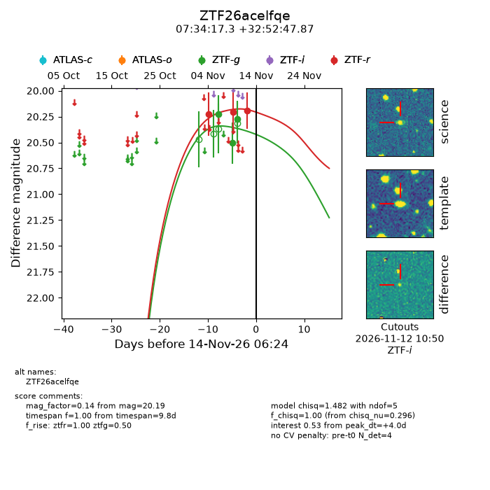
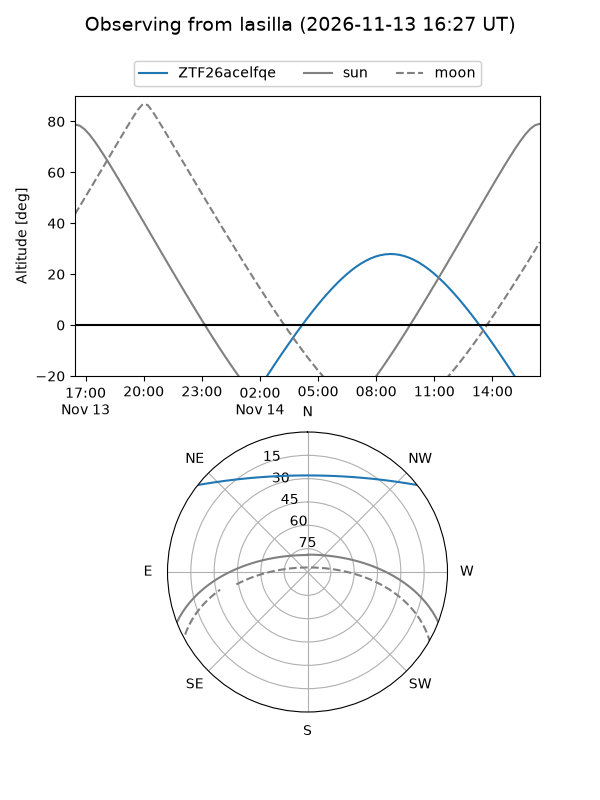
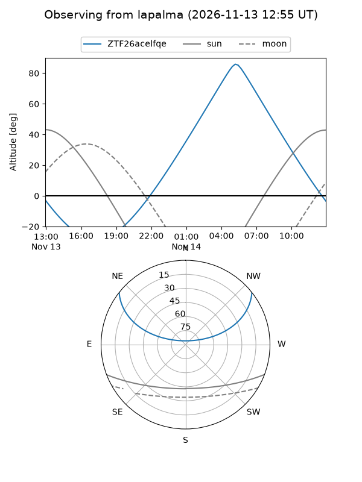
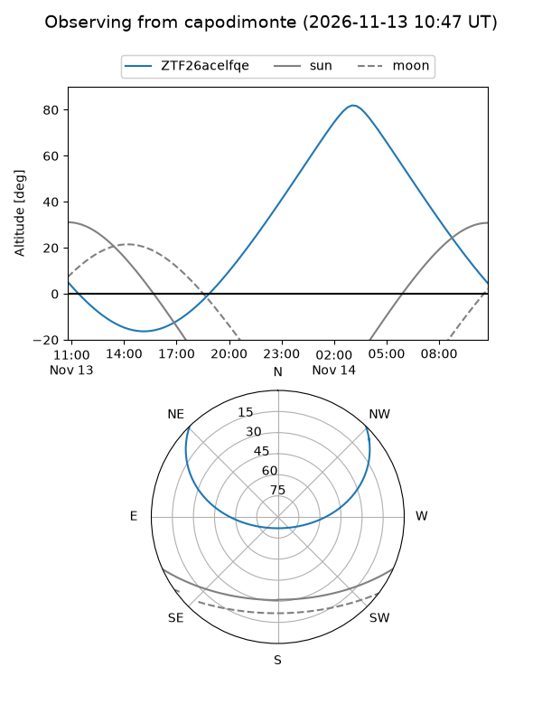
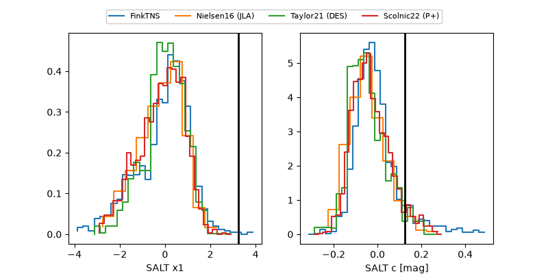

ZTF26acelfqe
Target ZTF26acelfqe at 2026-11-14 06:25
Aliases and brokers:
FINK-ZTF: ztf.fink-portal.org/ZTF26acelfqe
Lasair-ZTF: lasair-ztf.lsst.ac.uk/objects/ZTF26acelfqe
ALeRCE-ZTF: alerce.online/object/ZTF26acelfqe
Direct TNS query: direct search
alt names
ZTF26acelfqe (ztf,fink_ztf)
Coordinates:
equatorial (ra, dec) = 113.5723,+32.87996
equatorial (HMS+DMS) = 07:34:17.34,+32:52:47.87
galactic (l, b) = (186.4009,+22.73564)
Flags:
peak dt: +4.0
Photometry:
last ztfg=20.27, ztfr=20.19
3 ztfg, 3 ztfr detections
Lightcurve

Visibility



Additional plots
